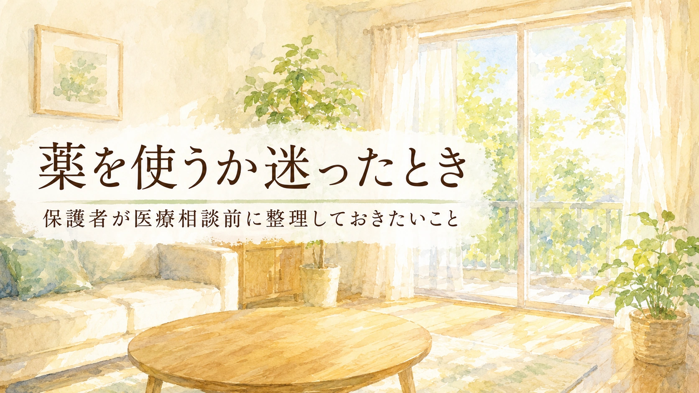

この記事は、子どもの薬について保護者が医師に相談する前に、家庭と学校で見えている情報を整理するためのコラムです。診断、治療、服薬指示、薬の変更や中止の判断の代わりではありません。薬に関する判断は、必ず医師や薬剤師に相談してください。
医師から薬の話が出たとき、保護者は大きく迷います。 「飲ませた方がいいのか」「副作用は大丈夫なのか」 「性格が変わってしまわないか」「薬に頼ることにならないか」。 その不安は自然なものです。 この記事では、薬をすすめるのでも、否定するのでもなく、 医師に相談する前に、家庭と学校で見えていることをどう整理すればよいかを考えます。 大切なのは、薬を使う・使わないを保護者だけで抱え込まず、 医療、家庭、学校支援をつなげて考えることです。
1. 薬は「よい・悪い」だけで決められない
子どもの薬について考えるとき、保護者は強い不安を抱きます。 それは自然なことです。 薬は体に入るものですし、子ども自身が十分に説明できない年齢であれば、 保護者の迷いはさらに大きくなります。
ただ、薬を「よいもの」「悪いもの」の二つに分けると、判断が難しくなります。 薬が助けになる子もいます。 一方で、薬だけで生活上の困りごとがすべて解決するわけではありません。
たとえば、集中しにくさ、衝動性、強い不安、睡眠の乱れ、てんかん発作などは、 学校生活や家庭生活に大きな影響を与えることがあります。 医師は、本人の状態、生活への支障、これまでの支援、体の状態などを見ながら、 薬が選択肢になるかを判断します。
保護者が担うべきことは、薬を一人で決めることではありません。 家庭と学校で見えている事実を整理し、医師に伝えることです。
2. まず整理したいのは「何に困っているか」
薬を使うかどうかを考える前に、まず整理したいのは、 「何を改善したいのか」です。 ここが曖昧なまま薬の話に入ると、効果があったのか、なかったのかも判断しにくくなります。
| 困りごとの例 | 家庭で見える姿 | 学校で見える姿 |
|---|---|---|
| 不注意 | 忘れ物、宿題の抜け、準備の途中で止まる | 指示を聞き落とす、提出物を忘れる、板書が途中で止まる |
| 衝動性 | 急に怒る、きょうだいに手が出る、待てない | 割り込む、友達トラブル、順番を待てない |
| 多動性 | じっとしていられない、寝る前も動き続ける | 離席、姿勢の崩れ、授業中の落ち着かなさ |
| 不安 | 登校前の腹痛、泣く、確認が多い | 発表を避ける、保健室利用、行事前に不安定になる |
| 睡眠 | 寝つけない、夜中に起きる、朝起きられない | 午前中の眠気、遅刻、集中の低下 |
| てんかん発作 | 発作の有無、発作後の疲れ、服薬忘れ | 授業中の発作、保健室対応、活動中の安全配慮 |
「落ち着かないから薬」ではなく、 「どの場面で、何が、どのくらい困っているのか」を整理します。 その情報が、医師の判断を助けます。
3. 子どもに関係する薬を大まかに知る
子どもの発達や学校生活に関係して相談される薬には、いくつかの種類があります。 ここでは、薬を選ぶためではなく、医師に何を相談するかを整理するために、大まかに見ておきます。
| 薬の種類 | 主な目的 | 家庭・学校で見たいこと |
|---|---|---|
| ADHDに関する薬 | 不注意、衝動性、多動性などの困りごとを調整する目的で検討される | 集中、衝動性、食欲、睡眠、気分、夕方の変化 |
| 抗てんかん薬 | てんかん発作を抑える目的で使われる | 発作の有無、眠気、ふらつき、ぼんやり感、疲れやすさ、服薬忘れ |
| 睡眠に関する薬 | 寝つきや睡眠リズムを整える目的で検討されることがある | 寝つき、夜間覚醒、朝の起きやすさ、日中の眠気 |
| 不安・気分に関する薬 | 強い不安、気分の波、興奮、こだわりなどに対して検討されることがある | 不安の強さ、気分の波、活動量、イライラ、学校生活への影響 |
ここで大切なのは、薬の種類を保護者が判断することではありません。 医師に、生活の中で何が起きているかを具体的に伝えることです。
4. ADHDに関する薬の相談で見たいこと
ADHDに関する薬は、不注意、衝動性、多動性などによって、 本人の学校生活や家庭生活に大きな支障が出ている場合に、医師が検討することがあります。
ただし、ADHDの支援は薬だけではありません。 環境調整、見通し、指示の出し方、課題量の調整、ペアレントトレーニング、学校との連携なども重要です。 薬を使う場合も、こうした支援が不要になるわけではありません。
医師に伝えたいこと
- どの場面で集中が続きにくいか
- 衝動的な行動がどのくらい起きているか
- 友達関係や授業への影響があるか
- 宿題、朝の準備、忘れ物、提出物で困っているか
- 睡眠、食欲、体重、気分の状態
- 学校での様子と家庭での様子に差があるか
- すでに試した環境調整や支援
薬の効果を見るときも、 「おとなしくなったか」だけで判断しないことが大切です。 本人が授業に参加しやすくなったか。 叱られる回数が減ったか。 友達関係で失敗が減ったか。 宿題や準備に取り組みやすくなったか。 本人の自己否定が減ったか。 そのような生活の変化を見ます。
5. 抗てんかん薬を飲んでいる子の場合
子どもによっては、てんかん発作を抑えるために抗てんかん薬を服用している場合があります。 抗てんかん薬は、発作の型や本人の状態に応じて、医師が選ぶ薬です。 保護者や学校が自己判断で増やしたり、減らしたり、急にやめたりするものではありません。
家庭や学校で大切なのは、薬の名前を覚えることだけではありません。 服薬後の様子を、具体的に観察することです。
抗てんかん薬で共有したい観察項目
- 発作の有無、頻度、時間帯
- 発作の前後の様子
- 眠気、ふらつき、めまい、ぼんやり感
- 授業中の集中や反応の変化
- 体育、登下校、校外学習など安全面で気になること
- 服薬を忘れた日があるか
- 睡眠不足、発熱、疲労など発作に関係しそうな要因
抗てんかん薬を服用している場合、学校での安全配慮も大切になります。 発作時の対応、保健室との連携、体育や水泳、校外学習での配慮などは、 必要に応じて医師、保護者、学校で確認しておきます。
服薬していることを広く知らせる必要があるとは限りません。 ただし、安全に関わる情報は、担任、養護教諭、管理職など、 必要な範囲で共有しておくことが重要です。
6. 睡眠・不安・気分に関する薬の場合
子どもの中には、寝つきの悪さ、昼夜逆転、強い不安、気分の波、興奮の強さなどについて、 医師から薬の話が出ることがあります。
この場合も、薬を使うかどうかだけでなく、生活全体を見ることが重要です。 睡眠リズム、学校での緊張、家庭での疲れ、ゲームや動画の時間、登校しぶり、 友達関係、学習負荷などが関係していることがあります。
| 相談したい状態 | 記録したいこと |
|---|---|
| 寝つきが悪い | 寝る時刻、眠りに入るまでの時間、画面時間、寝る前の不安 |
| 朝起きられない | 起床時刻、遅刻・欠席、午前中の眠気、休日との差 |
| 強い不安 | 不安が出る場面、体調不良、確認行動、登校や行事との関係 |
| 気分の波 | 怒り、涙、無気力、活動量、食欲、睡眠との関係 |
薬を検討する場合でも、環境調整や生活リズムの見直しは重要です。 薬だけに期待しすぎず、何が本人の負担になっているかを合わせて見ていきます。
7. 医療相談前に整理しておきたいこと
医師に相談するときは、「薬が必要でしょうか」とだけ聞くより、 生活の中で何が起きているかを具体的に伝えると、相談が進みやすくなります。
一つ目：困りごとの場面
家庭、学校、登校前、帰宅後、宿題、友達関係、給食、睡眠など、 どの場面で困っているかを整理します。
二つ目：頻度と期間
いつから続いているのか、週に何回あるのか、 学期が変わってからなのか、行事前だけなのかを記録します。
三つ目：すでに試した支援
座席調整、指示のメモ、宿題量の調整、予定表、休憩、通級、別室、 ペアレントトレーニング、生活リズムの調整など、試したことを伝えます。
四つ目：薬で何を改善したいか
「落ち着かせたい」ではなく、 「授業中に指示を聞きやすくしたい」 「友達に手が出る回数を減らしたい」 「寝つきを整えたい」など、具体的な目標にします。
目標が具体的になると、薬を始めた後に何を観察するかも明確になります。
8. 学校と共有するときの注意
薬の情報は、子どもの大切な個人情報です。 すべてを広く共有する必要はありません。 ただし、学校生活に影響する場合や安全面に関わる場合は、必要な範囲で共有することが大切です。
| 共有したい内容 | 共有する目的 |
|---|---|
| 服薬後の眠気やぼんやり感 | 授業中の様子や活動量を観察してもらう |
| 食欲の変化 | 給食量、体調、午後の疲れを見てもらう |
| 発作時の対応 | 安全確保、保健室対応、校外活動時の配慮につなげる |
| 薬の開始・変更時期 | 変化が薬と関係するか、学校での観察材料にする |
| 医師からの学校向け助言 | 学校支援や合理的配慮に反映する |
学校への伝え方
「薬の内容を広く共有したいわけではありません。 ただ、学校での様子も医師に伝えたいので、 授業中の集中、眠気、食欲、友達関係など、気づいた変化を教えていただけると助かります。」
薬の情報は、本人を特別視するためではなく、 安全と支援のために使う情報です。
9. 薬を始めた後に見ること
薬を始めた後は、「効いたかどうか」を一言で判断しないことが大切です。 家庭と学校で、変化を具体的に見ます。
薬を始めた後に見たいこと
- 困りごとがどの場面で減ったか
- 本人が楽になったと言っているか
- 叱られる回数や失敗体験が減ったか
- 集中、衝動性、睡眠、食欲、気分に変化があるか
- 眠気、ふらつき、頭痛、腹痛、食欲低下などがあるか
- 夕方や薬が切れる時間帯に不安定さが出るか
- 学校での様子と家庭での様子に違いがあるか
- 本人が薬をどう受け止めているか
副作用らしき変化がある場合も、保護者だけで判断せず、 いつ、どのくらい、どの場面で起きたのかを記録して、医師や薬剤師に相談します。
10. 自己判断で避けたいこと
薬について、家庭で不安が強くなると、 「今日は飲ませないでおこう」 「効いていない気がするから増やしたい」 「副作用が心配だから急にやめたい」 と考えることがあります。
しかし、薬は自己判断で増やす、減らす、急にやめることを避ける必要があります。 とくに抗てんかん薬など、急な中断が安全面に関係する薬もあります。 不安がある場合は、必ず医師や薬剤師に相談します。
| 避けたいこと | 代わりにすること |
|---|---|
| 自己判断で中止する | 気になる変化を記録して医師に相談する |
| 効いていないから量を変える | 効果が見えにくい場面を整理して受診時に伝える |
| 副作用かもしれない変化を放置する | いつ、どの症状が、どのくらい続くかを記録する |
| 学校に何も伝えない | 必要な範囲で、観察してほしいことだけ共有する |
| 薬だけで解決しようとする | 環境調整、学校支援、生活リズムも同時に見直す |
11. 医療相談前の整理メモ
医師に相談する前に、次のようなメモを作っておくと、話が具体的になります。 長い記録でなくても構いません。 事実を短く整理することが大切です。
このメモの目的は、薬を使う方向に進めることではありません。 医師と相談するために、子どもの生活を見える形にすることです。
12. 避けたい言葉と、置き換えたい言葉
薬について話すとき、子ども本人にどう伝えるかも大切です。 薬を罰や管理の道具のように伝えると、本人が傷つくことがあります。
| 避けたい言葉 | 置き換えたい言葉 |
|---|---|
| 「落ち着きがないから薬を飲む」 | 「困っている場面を少し楽にする方法の一つとして、先生と相談しているよ」 |
| 「薬を飲まないとだめ」 | 「薬が合うかどうか、体や生活の様子を見ながら医師と考えるよ」 |
| 「薬で治す」 | 「薬だけでなく、環境ややり方も一緒に整えるよ」 |
| 「薬に頼るのはよくない」 | 「必要かどうかを、事実をもとに医師と相談しよう」 |
| 「飲んだらちゃんとしなさい」 | 「飲んだ後に楽になったこと、困ったことを一緒に見ていこう」 |
まとめ：薬を使うかどうかを、一人で背負わない
子どもの薬について考えることは、保護者にとって大きな不安を伴います。 飲ませることも怖い。 飲ませないまま子どもが毎日つらい思いをすることも怖い。 その迷いは自然なものです。
大切なのは、薬をよいもの、悪いものと決めつけることではありません。 何に困っているのか。 どの場面で困っているのか。 どの支援を試したのか。 薬を使うなら、何を改善目標にするのか。 副作用らしき変化をどう観察するのか。 そこを整理して、医師と相談することです。
薬を使う場合も、環境調整や学校支援は必要です。 薬を使わない場合も、支援は必要です。 「薬か支援か」ではなく、 医療、家庭、学校がそれぞれ見える情報を持ち寄り、 子どもが少しでも安全に、安心して生活できる方法を探していくことが大切です。
保護者が一人で決める必要はありません。 家庭で見える姿、学校で見える姿、医師が見る体と心の状態。 その三つをつなぐ準備をすることが、医療相談前にできる大切な一歩です。
薬を使うかどうかの判断は、医師と相談して決めることです。 まなびの森教育研究所では、家庭や学校で見えている困りごとを整理し、医療相談や学校との情報共有で伝えたいことを言葉にするお手伝いをしています。
保護者向け相談ページを見る